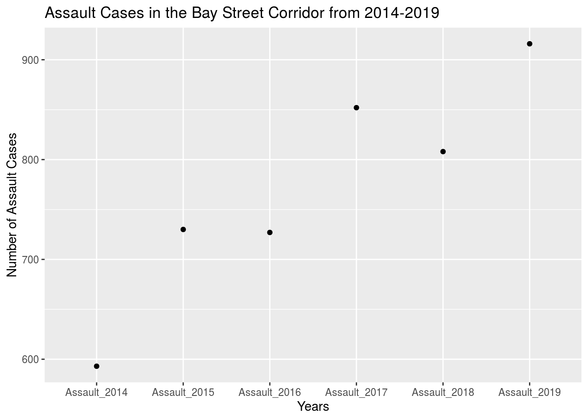

Abstract
Toronto is home to millions of people including myself. As a young student living in the Bay Street Corridor, I was particularly interested in crime rates where I live- specifically in the rates of assault over the years. This data set accumulates crime rates for various different crimes within each neighbourhood in Toronto. This analysis extracts assault information specifically from the Bay Street Corridor.
Introduction
Crime rates in Toronto vary by neighbourhood. In this brief analysis, we will analyze the rates of assault in the Bay Street Corridor and discuss the trends below.
Results and Discussion

From the years 2014-2019, it was found that there was an increase in cases of assault in the Bay Street Corridor in Toronto, Ontario. In the graph above, we can clearly see the association between the years and the number of assaults. It is important to note that the population of the Bay Street Corridor is 25,797 and has increased by 33.3% since 2011 (City of Toronto, https://www.toronto.ca/ext/sdfa/Neighbourhood%20Profiles/pdf/2016/pdf1/cpa76.pdf).
Additionally, we can see a spike in cases from 2014-2015- this is the largest jump in the past 5 years. Unfortunately, there are not enough data points to draw a conclusion regarding years before 2014 and the present.
This general trend is unfortunately due to a larger issue in Toronto regarding increases in various types of assault, specifically sexual assault. According to an article published by The Toronto Star in June 2019, sexual assaults have been on the rise for the fourth straight year- not just in Toronto, but nationwide (Nationwide rate of reported sex assaults rises for fourth straight year, Statistics Canada says, https://www.thestar.com/news/canada/2019/07/22/nationwide-rate-of-reported-sex-assaults-rises-for-fourth-straight-year-statistics-canada-says.html). Statistics Canada has reported that sexual assault rates rose in every province and territory and Canada, except for the Northwest Territories. This is in conjunction with our reported findings within this data set of the Bay Street Corridor.